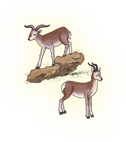
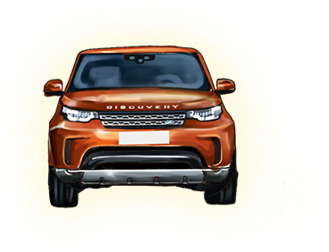

- １． 发现·无止境 项目回顾展
- 人类心灵深处对于未知事物的渴求和未曾停歇追寻的天性，正是贯彻路虎品牌“心至无疆”的核心精神。 不论滇藏名胜线路的陡峭复杂、圣洁雪山的峰峦重重环绕，或是一望无垠的库木塔格沙漠，《发现无止境项目回顾》奠基于路虎傲然驰骋、永不止步的探索精神，引领我们再一次饱览香格里拉的神秘壮丽，或邂逅云雾缭绕的梅里雪山，偶然转身又处于元阳梯田一泻千里的滂薄气势。 作为路虎全球远征在中国的延续，“发现无止境”活动于2012年展开传奇征程，路虎享誉全球的ATRS全地形科技的超凡实力和卓尔不群的功能性，能够从容应对千色地形，既发现四季风光与天工之作，又无止尽地将世界尽揽眼底。
- ２． 发现·滇藏 艺术展
- 《发现·滇藏艺术展》以不同形式展现滇藏地区的自然及人文之美，从经典的唐卡长卷、西藏影像到藏地传统手工艺，为当代都市带来了生动的民族文化体验。展览特别邀请了西藏工艺美术大师来到现场绘制长达十米的唐卡，透过细腻的工笔与璀璨的色彩，形象地勾勒了路虎与松赞共同开发的“滇藏穿越星级线路”。
凝视西藏影像單元
《凝视西藏影像單元》由曾任央视编导，多年投入滇藏文化项目的白玛多吉拍摄，展览以《山居来谷》、《芒康盐井》、《滇藏公路》三部影像作品展开，引领观众走过磅礴的片片雪山、迢迢流水的澜沧江，再经历蜿蜒曲折的路途，一同心醉于高原。唐卡长卷制作展
高1.33米、长10米，以西藏传统精妙的唐卡绘画手法，突破了时空和地理的局限，完整呈现了路虎松赞滇藏秘境穿越星级线路。这条由路虎揽胜和路虎发现串联起来的经典旅行线路，起点为“世界遗产”之地丽江，终点在圣城拉萨，沿途所有的标志性自然景观、人文风情以及松赞的精品酒店，都绘制于巨幅唐卡之上，这件作品堪称是现代版本的《千里江山图》，同时也生动地体现了唐卡作为传统藏族绘画艺术在当代创新传承。 唐卡画师历时了2个月绘制了这件精美的巨幅唐卡作品，目前已完成98%，将在滇藏文化周现场完成剩下部分。手工艺單元
滇藏传统手工艺来自于这个地区特殊的地理位置、自然条件、物质资源、与外界的文化交流、以及历史文化和宗教信仰。匠人精神无处不在，传统手工艺如唐卡、铜器、银首饰、藏毯、布艺等，在“发现无止境——滇藏文化周”的展览活动中，主办方精心挑选和策划了独特的滇藏手工艺展。 - ３． 发现·秘境 影像艺术展
- 《发现·秘境》影像艺术展通过松赞滇藏线开发和当地文化项目的白玛多吉、以及为《国家地理》杂志摄影30多年的资深摄影师麦克·山下（Michael Yamashita）的镜头两位摄影艺术家之眼，带我们走近滇藏秘境，去发现这一地区宏伟的自然状貌和细腻的精神生活，觉知一生一见的远方奥秘。
- ４． 发现·经典 路虎Defender专区
- Defender，一款有着纯正越野风格的中大型极致全地形SUV，代表一种将机械性能发展到极致的可能，在路虎走过的70余年历史中，独具经典里程碑意义。在最艰苦的环境、在人迹罕至的荒野、在各国军队里、在探险家的身旁、在各项越野拉力赛的保障车队中，你都会看到Defender熟悉而有个性的身影。生而专为冒险家、战士、探险家和各类漫游者而打造，多年来广泛的使用证明了路虎Defender是世界上最“能干的”越野车之一。路虎Defender因其对汽车精髓的捕捉而负有盛名，而对细节的极致关注又使其更添光彩。过去，它曾完成陆地环球之旅，这次则是它对城市生活的温和回归。杰作般的完美平衡，象征路虎出手不凡的成就，亦是对于极致探索的不停歇。
- ５． 发现·滇藏 音乐剧场
- 正念音乐会不仅是一场听觉的盛筵，更是探索心灵的旅程。表演者都是充满灵性的自然音乐疗愈师和藏地梵音的艺术家，均使用藏地传统乐器。您可以在音乐会上欣赏藏地的梵呗与原生态自然音乐，在声波中疗愈内心，让身体的能量场回归本有的秩序。
- ６． 发现·滇藏 手工坊
- 透过《发现·滇藏 手工坊》将滇藏传统经幡与玛尼石融入真挚心意，不论亲手制作属于自己的纪念，或致赠亲友献上温暖祝福，以双手用心感受来自雪域高原最深切的祈祷与祝福。
- ７． 发现·滇藏 美食
- Modern Art Kitchen 融汇高原生活的智慧与滇藏饮食文化的精髓，以”藏红”作 为主题，透过经典的系列小食与甜而不腻的创意甜品，从山羊奶酪塔到红茶马卡龙，综合味蕾与视觉的飨宴，引领我们漫步雪山草原、香格里拉，浸身于飘逸的经幡、百山的壮阔，特有的滋味不言而喻。
打酥油茶
藏区日常最流行的饮料莫过于酥油茶，它以土特产的牦牛酥油和藏茶加工制作而成，具有御寒提神、生津止渴的作用，几乎每户藏区人家都会亲打酥油茶。所谓的打酥油茶，关键在于“打”。打茶时，藏民会将熬好的藏茶，倒入酥油茶桶，再放入酥油和适量食盐，用力将“甲洛”（酥油茶桶上的木棍）上下来回抽几十下，搅到油茶交融的程度即可。